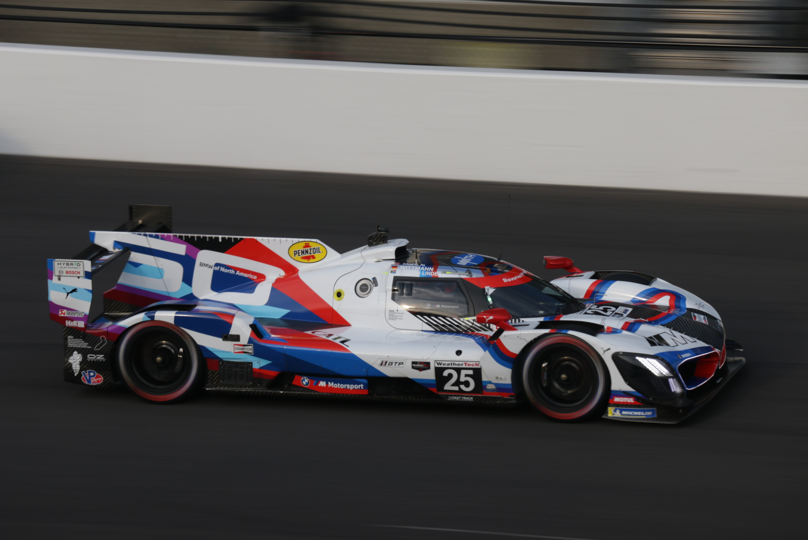
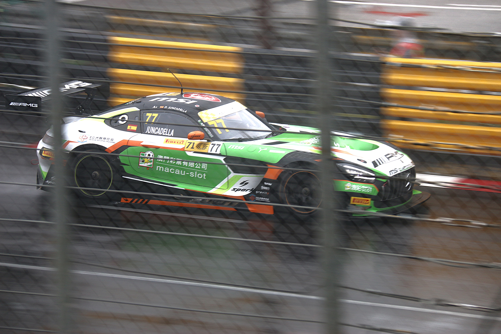
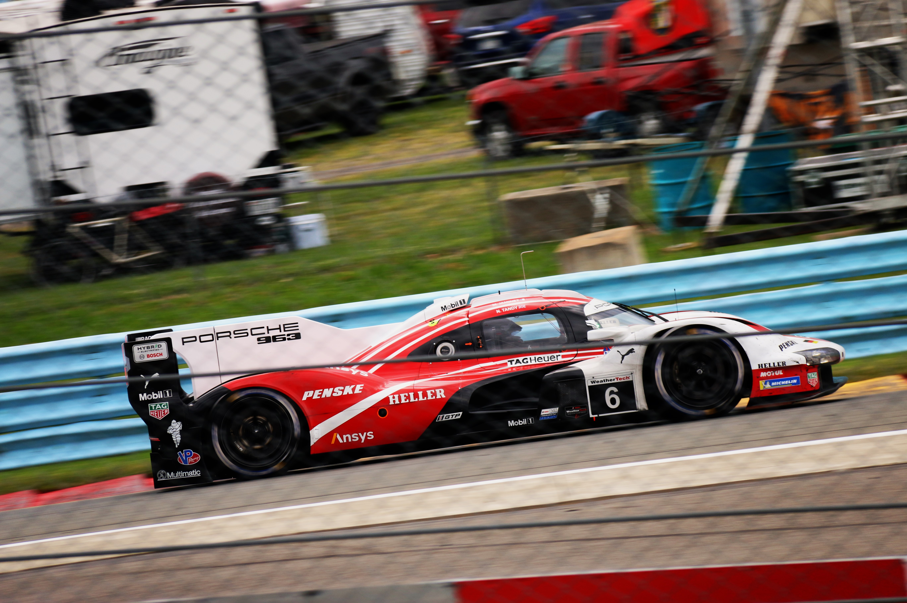

Heres the exclusive naughty stuff you really clicked on this webpage for. Those brakes are hotter than the hottest at over 1000°C 🥵 🥵
I will upload these hot pics when I attend more events for free, you don't even need to pay those cheeky websites for hot pics. I'll give it for free









As you can tell, I uploaded these pics because I have a slight interest in racing. I originally applied to mechanical engineering at UofT, in the video interview they even asked me who is a engeering aspiration for me. This was my response, obviously my low high school chemistry mark (88) mattered more. So I ended up studying in Arts and Science. UofT lost what would've been a mechanical fanatic in powertrain design, which is what I always wanted to do.
Current I am grinding Le Mans Ultimate which is the only game I can afford while using a G920 that I bought in September 2020 from working at Loblaws. My safety rating is sliver which means I never really get to drive Hypercars. I usually drive LMGT3 and LMP2 (ELMS and 2023 WEC spec). However, I do really enjoy driving GTEs, shame that online races rarely have GTEs now.
My favourite GT3 cars are this and this Both of them are front engined, rear-mounted transaxle designs with legendary on-track and off-track records. Both are incredibly competitive, using the greatest engines of all time. With the latter being more competitive, dominating across the globe in IMSA, GTWC Asia/EU, IGTC, NLS, and DTM/ADAC GT.